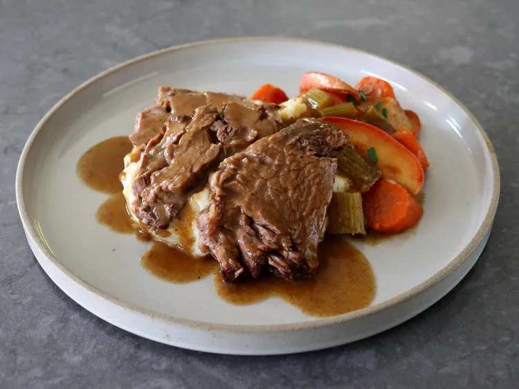

Apple Cider Pot Roast

Description
This fork-tender apple cider pot roast is exactly what mashed potatoes are made for. Though this preparation is often used with pork, beef, too, is absolutely delicious cooked in this apple cider sauce.
Ingredients
- 4 teaspoons kosher salt
- 2 teaspoons freshly ground black pepper
- 1/4 teaspoon cayenne pepper
- 4 pounds beef chuck roast
- 1 tablespoon avocado oil, or other high heat vegetable oil
- 3 tablespoons butter
- 1 yellow onion, diced
- 4 cloves garlic, minced
- 2 tablespoons all-purpose flour
- 1/3 cup cider vinegar
- 4 cups apple cider
- 1 tablespoon Worcestershire sauce
- 2 tablespoons Dijon mustard
- 1 1/2 teaspoons poultry seasoning
- 2 cups chicken broth
- 3 ribs celery, cut into 1/2-inch pieces
- 3 large carrots, peeled, cut into 1 1/2-inch pieces
Steps
- Mix salt, pepper and cayenne together in a small bowl. Season all sides of the beef with spice mixture.
- Add oil to a large heavy-bottomed skillet and place over high heat. When oil starts to shimmer, transfer in the beef and brown very thoroughly on both sides. Once browned, turn off heat, and remove to a plate and reserve. If using a Dutch oven for this recipe, instead of a slow cooker, the browning step can be done directly in the Dutch oven.
- Add butter to the pan, and turn heat back on to medium. Add onions and a big pinch of salt, and cook, stirring, for a few minutes until the onions turn translucent. Add garlic and cook about 30 seconds more, then stir in flour. Cook, stirring, until flour starts to stick onto the bottom of the pan, 1 to 2 minutes.
- Add vinegar and apple cider, and whisk to combine, while scraping the bottom of the pan to deglaze. Raise heat to high, and bring the liquids to a boil. Add any juices from the plate of beef back in; whisk in Worcestershire sauce, Dijon, and poultry seasoning. Boil on high heat until the liquids have reduced by about half and mixture has thickened slightly.
- Once reduced, add chicken broth, and boil again on high heat, reducing by about half again. Turn off heat and set aside.
- Place beef in a slow cooker, and add celery and carrots over the top. Pour in cooking liquids from the pan. Lock on lid and cook on Low until the meat is fork tender, but not yet falling apart, about 8 hours.
- Remove meat and vegetables to a platter. Taste the sauce for seasoning and adjust as needed; strain sauce through a sieve if desired. Ladle some sauce over pot roast and vegetables, and serve with remaining sauce alongside.
- For an optional step, the sauce can be thickened further after meat and veggies are removed. Whisk cornstarch and water together in a small bowl to make a slurry. Turn heat up to high, bring the sauce to a simmer, and whisk in cornstarch slurry. Simmer until thickened, strain if desired, and serve.
Home